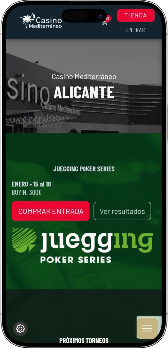

Oferta exclusiva de bienvenida de
Oferta exclusiva de bienvenida de
Casino Mediterráneo Alicante — juegos, póker, restaurante y eventos nocturnos
Los mejores casinos
Detalles de bonificación
Casino
Bonuses
Rate
Giros gratis
Más info
Conseguir
Ventajas
-
Cobros de premios ágiles y claros
-
Series de póker con grandes premios
-
Slots con jackpots y rondas bonus
-
Ruleta y blackjack con límites variados
-
Ubicación cómoda junto a la marina
-
Restaurante y bar para una noche completa
-
Seguridad profesional y ambiente confortable
- Casino Mediterráneo Alicante destaca por combinar sala moderna, buen ritmo de póker y servicios completos. Es un lugar pensado para disfrutar sin prisas: cena, copa y juego en un mismo plan. Además, la experiencia suele sentirse cuidada y accesible para distintos perfiles de visitante.
Casino Mediterráneo Alicante App


Acerca de Casino Mediterráneo Alicante
Casino Mediterráneo Alicante se diferencia por su calendario constante y una escena de póker muy activa. Además, combina juego y gastronomía para una salida completa sin desplazamientos.
- Premios hasta 100.000€.
- Bono de juego 50€.
- Póker con botes 50.000€.
Casino Mediterráneo Alicante es un casino moderno junto al mar, ideal para vivir una noche diferente. El ambiente es actual y elegante sin excesos, por lo que resulta cómodo para todo tipo de público.
Aquí se puede alternar entre juegos de mesa clásicos y slots con dinámicas variadas. La zona de póker aporta movimiento y emoción, con eventos que mantienen el interés de forma constante. El servicio suele ser atento y facilita la experiencia a quien llega por primera vez. El casino se vive como un plan completo donde juego y socialización van de la mano. También hay opciones para cenar o tomar algo y alargar la velada con calma. La ubicación invita a combinar la visita con un paseo por la marina. El acceso controlado y la seguridad refuerzan una sensación de tranquilidad. En conjunto, es un espacio pensado para disfrutar, desconectar y sumar sensaciones.
Noche junto a la marina: estilo, ambiente y ritmo en Casino Mediterráneo Alicante
Casino Mediterráneo Alicante recibe con una estética moderna, iluminación cuidada y una organización pensada para moverse con comodidad. El espacio se percibe ordenado y agradable, con zonas diferenciadas que ayudan a mantener una experiencia equilibrada. El ambiente suele sentirse como un lounge urbano donde se puede jugar y conversar sin prisas. La música y el sonido general acostumbran a acompañar sin saturar.
En cuanto a horarios, el casino resulta práctico para planificar tanto una visita temprana como una salida nocturna. El ritmo cambia según el día: entre semana suele ser más tranquilo y el fin de semana se nota más movimiento. En las horas de mayor afluencia la actividad se concentra en mesas y en la zona de póker, donde el ambiente se vuelve más social. Esa combinación atrae a quienes buscan energía, pero con sensación de control.
La parte de bar y gastronomía convierte el juego en un plan completo. La propuesta suele apoyarse en cócteles, vinos y clásicos bien ejecutados para acompañar la noche de forma relajada. El restaurante encaja tanto antes de jugar como para cerrar la velada con un bocado tardío. Comer y beber aquí se vive como un complemento natural del conjunto.
No es habitual esperar un hotel dentro del propio casino, pero la marina ofrece múltiples opciones de alojamiento muy cerca, desde hoteles de negocios hasta propuestas más vacacionales. Esto facilita venir a torneos, eventos o escapadas sin depender de largos desplazamientos. Muchos visitantes combinan la experiencia con paseos frente al mar y rutas nocturnas por la zona. Así, la visita se integra en un plan más amplio.
Los eventos y el entretenimiento en Casino Mediterráneo Alicante suelen girar alrededor de torneos, noches temáticas y propuestas culturales. Las series de póker aportan emoción competitiva, mientras que ciertas programaciones nocturnas añaden un toque festivo. En temporada pueden aparecer semanas especiales y actividades puntuales con más dinamismo. Por eso el casino se percibe como parte de la vida nocturna, no solo como sala de juego.
Las fórmulas de incentivos y ventajas buscan devolver valor en forma de privilegios. Lo habitual es acumular puntos, recibir invitaciones, detalles en fechas señaladas y ofertas personalizadas. Para quienes visitan con frecuencia, las condiciones ganan peso: crecen los beneficios y el acceso a experiencias reservadas. El resultado es una propuesta que combina juego, servicio y ambiente con continuidad.
Servicio y operaciones: personal, idiomas, pagos y cobro de premios
El equipo de Casino Mediterráneo Alicante suele trabajar con un enfoque clásico de casino presencial: control de acceso, ayuda en registro y personal atento en sala. Los crupieres acostumbran a mantener ritmo profesional, explicando dinámicas básicas cuando el visitante lo necesita. En momentos de mayor afluencia, la atención se apoya en procedimientos claros para que todo avance sin fricciones. La sensación general se construye con corrección, calma y un ambiente controlado.
En idiomas, lo habitual es un dominio pleno del español y, en un entorno turístico, apoyo funcional en inglés. Para visitantes internacionales, el personal suele facilitar indicaciones esenciales y resolver dudas prácticas, aunque la comunicación principal se mantiene en español. En póker y torneos la claridad es clave, por lo que anuncios y normas se transmiten de forma directa. Si se prevén gestiones complejas, conviene consultarlas en el punto de atención al cliente.
La moneda habitual de operación es el euro, y los métodos comunes incluyen efectivo y tarjetas bancarias. En un casino presencial, estos formatos cubren tanto la parte de juego como consumos de restauración. En ciertas situaciones pueden existir límites, verificaciones adicionales o requisitos de identificación, sobre todo cuando las cantidades son elevadas. En general, cuanto mayor es la operación, más importante es que la documentación esté en regla.
Los cajeros automáticos en el propio entorno o cercanos permiten retirar efectivo con rapidez, aunque las comisiones dependen de la entidad bancaria. El cambio de divisa puede ser limitado dentro del circuito del casino, por lo que suele ser más eficiente llegar ya con euros preparados. Si se viaja con otra moneda, lo mejor es gestionar el cambio con bancos o servicios autorizados durante el día. También se recomienda contar con un método de pago alternativo para evitar imprevistos.
El cobro de premios en un casino presencial se realiza normalmente en caja, siguiendo reglas internas y con identificación obligatoria. Los importes pequeños suelen liquidarse con agilidad, mientras que cantidades grandes pueden requerir verificaciones adicionales y tiempos de tramitación más largos. Esto puede ir desde minutos hasta un proceso más extenso si hay controles internos. Guardar tickets y justificantes ayuda a resolver cualquier aclaración posterior.
La fiscalidad del premio depende del perfil del jugador y de la normativa aplicable, por lo que no existe una respuesta única válida para todos. Como criterio general, los premios pueden considerarse renta y estar sujetos a declaración según la situación personal. El casino suele cumplir con exigencias de identificación y registro, pero la responsabilidad de declarar suele recaer en el jugador. Si se trata de una cantidad importante, es recomendable asesorarse para actuar correctamente.
Normas de visita en Casino Mediterráneo Alicante: vestimenta, acceso y comodidad
La entrada al casino está reservada a personas mayores de edad y normalmente se solicita un documento de identidad en el acceso. El control de seguridad sigue procedimientos estándar para mantener un ambiente tranquilo. El código de vestimenta suele encajar en un estilo smart casual, adecuado para una salida nocturna. La ropa deportiva, elementos de playa o un look excesivamente informal pueden implicar que no se permita el acceso. Dentro es importante respetar la convivencia: no incomodar a otros visitantes y seguir las indicaciones del personal. La grabación de vídeo y la toma de fotos en zonas de juego suelen estar limitadas. No se recomienda acceder con bultos grandes, y ciertos objetos pueden requerir revisión. En mesas, el orden de apuesta y el ritmo lo marcan normas claras, por lo que conviene preguntar si surge una duda. Para póker o torneos, es útil llegar con tiempo para completar registro y evitar prisas. Se puede llegar caminando por la marina, en taxi o en coche. Para quien conduce, suele haber parking, y el transporte público facilita el acceso desde puntos céntricos.
- • Código de vestimenta: estilo cuidado y casual elegante; mejor calzado cerrado; evitar ropa de playa y conjuntos deportivos.
- • Condiciones de acceso: 18+; documento obligatorio; posible registro en entrada; control de seguridad según criterio del casino.
- • Prohibiciones: fotos/vídeo en zonas de juego; conductas agresivas; interferir en partidas; acceso con embriaguez evidente; uso de documentación ajena.
- • Parking y cómo llegar: acceso cómodo en coche; parking en el entorno; recorrido a pie desde la marina; taxi como opción rápida de noche; paradas de bus cercanas a zonas principales.
Programa de fidelidad de Casino Mediterráneo Alicante: niveles, ventajas y bonos
El programa de fidelidad de Casino Mediterráneo Alicante suele estar diseñado para premiar la constancia y mejorar la relación valor‑experiencia en cada visita. La base se apoya en acumular puntos por juego y ciertos consumos, que después se transforman en ventajas. A mayor actividad, se accede a niveles superiores con mejores condiciones y ofertas personalizadas. Para muchos usuarios, el atractivo no se limita a los bonos: también cuenta el trato preferente y la comodidad. La inscripción suele ser rápida y se vincula al documento de identidad para facilitar el control de operaciones. Una vez dentro, la acumulación funciona de forma automática y se refleja en el perfil del cliente. Los niveles ordenan beneficios y hacen más sencillo entender qué se obtiene con cada tramo. En días de torneos o eventos, el programa puede reforzarse con acciones especiales. Es importante revisar caducidades y reglas de canje para aprovechar cada punto. Para el público de póker, suelen existir incentivos específicos como tickets y prioridad de registro. Al final, la fidelidad convierte el plan de casino en una experiencia más rentable y completa.
Condiciones de registro
- • Edad y documento: 18+; DNI o pasaporte obligatorio.
- • Formulario: datos básicos y aceptación de normas del club.
- • Tarjeta/perfil: activación de perfil digital o tarjeta de miembro.
- • Activación: los puntos empiezan a contar desde el alta.
Niveles y cómo conseguirlos
- • Bronze: alta + primera visita; beneficios de inicio y acumulación básica.
- • Silver: desde 1.000 puntos/mes; mejor ratio de puntos y más ofertas.
- • Gold: desde 3.000 puntos/mes; servicio preferente y ventajas ampliadas.
- • Platinum/VIP: desde 7.500 puntos/mes; privilegios máximos y experiencias exclusivas.
Bonos y ventajas
- • Bono de bienvenida: 10€ Free Play para empezar con impulso.
- • Cashback de juego: hasta 5% (Silver), hasta 8% (Gold), hasta 12% (VIP) por periodo.
- • Detalle de cumpleaños: 20€ Free Play o vale 20€ en gastronomía.
- • Tickets de torneos: 10–50€ en buy-in según nivel y campañas.
- • Ventajas combinadas: -10% en cenas ciertos días y descuento de parking (según nivel).
- • Canje de puntos: 100 puntos = 1€ en Free Play o servicios, bajo normas del club.
- • Ofertas personalizadas: misiones semanales con premio hasta 30€ Free Play o entradas de póker.
Proveedores de software
Entretenimiento y juegos e Casino Mediterráneo Alicante
Bonos y promociones en Casino Mediterráneo Alicante: ofertas, premios y eventos de temporada
Más allá del programa de fidelidad, Casino Mediterráneo Alicante suele activar promociones independientes para dar más valor a cada visita. Muchas giran alrededor del póker: series, satélites y jornadas especiales con premios añadidos. En slots, es común ver campañas con premios sorpresa o mecánicas “mystery” que aportan emoción. Los juegos de mesa también pueden acompañarse de noches temáticas con fichas promocionales o detalles bajo ciertas condiciones. La parte de ocio aporta motivaciones extra, con veladas musicales y celebraciones estacionales. La gastronomía puede integrarse mediante packs que combinan cena y ventajas de juego. En periodos festivos, el calendario se vuelve más intenso y aumenta el componente de sorteo y regalo. Para quienes llegan por primera vez, a veces hay ofertas de bienvenida para probar el entorno con menor barrera. También aparecen torneos de entrada accesible donde prima el ritmo y la participación. Para grupos, existen formatos que mezclan consumición, cena y entretenimiento en un plan único. Así, incluso una visita puntual puede convertirse en una experiencia especial con extras reales.
Promociones y bonos
- • Free Play de bienvenida: 5–15€ en slots en campañas de primera visita; ideal para empezar.
- • Mystery Prize Night: premios sorpresa de 50€ a 5.000€ en noches seleccionadas; más adrenalina.
- • Sorteo tipo jackpot: posibilidad de premio grande “hasta 100.000€” en días promocionales y mecánicas progresivas.
- • Series de póker: bolsas de premios “hasta 50.000€ o más” durante festivales; enfoque competitivo.
- • Satélites a torneos: entrada desde 20–40€ para ganar ticket 100–300€; acceso escalonado.
- • Happy Hours en bebidas: -20% en cócteles en franjas concretas; complemento perfecto.
- • Cena + bono: pack gastronómico con vale 10–25€ para juego en días señalados; plan completo.
- • Fiestas de temporada: eventos temáticos con regalos hasta 50€ y sorteos; ambiente festivo.
- • Mini torneos: buy-in 30–60€, formato rápido y recurrente; diversión constante.
- • Promos para grupos: paquete de ventajas hasta 100€ en vales/fichas con reserva de grupo.
Juegos populares en Casino Mediterráneo Alicante: de la ruleta al póker
La oferta de Casino Mediterráneo Alicante suele apoyarse en los clásicos que se esperan en un casino presencial moderno. Los slots atraen por su variedad temática, rondas bonus y un ritmo adaptable a cada jugador. Los juegos de mesa aportan experiencia “en vivo”, con crupier, fichas y emoción a cada mano. La ruleta sigue siendo favorita por su sencillez y la sensación de expectativa constante. El blackjack se elige por el componente de decisión y la idea de estrategia a lo largo del tiempo. Para un ritmo más rápido, la bacará ofrece una dinámica directa y muy de casino tradicional. La zona de póker crea un entorno aparte donde pesan la disciplina, la lectura del rival y el control emocional. Según el día, se puede alternar entre mesas de cash y torneos con ambiente más competitivo. Las versiones electrónicas encajan con quienes prefieren autonomía y velocidad sin perder el clima de sala. En horario nocturno el ambiente se intensifica y la experiencia se vuelve más social. Para principiantes, muchas opciones son accesibles con reglas simples de inicio. En conjunto, la selección permite construir una noche a medida, desde juego relajado hasta sesiones intensas.
- • Slots: variedad de temáticas, funciones bonus y rangos amplios de apuesta.
- • Ruleta: rondas rápidas y emoción constante; suele haber variantes disponibles.
- • Blackjack: decisiones y estrategia, ideal para quien busca control.
- • Bacará (Punto Banco): dinámica directa, ritmo ágil y esencia clásica.
- • Póker Texas Hold’em: cash y torneos; mezcla de técnica y psicología.
- • Póker Omaha: más combinaciones y manos con mayor acción.
- • Ruleta electrónica/juegos electrónicos: rapidez y comodidad para jugar a tu ritmo.
- • Apuestas deportivas (si la zona está activa): ver partidos y apostar en un mismo plan.
Apuestas en Casino Mediterráneo Alicante: mínimos y máximos por juego
Los rangos de apuesta en Casino Mediterráneo Alicante suelen estar pensados para cubrir perfiles muy distintos, desde quien quiere probar con importes bajos hasta quien busca límites altos. Los mínimos permiten aprender sin presión y mantener una sesión cómoda. Los máximos aportan margen para experiencias más intensas y ritmos de juego más exigentes. En slots y juegos electrónicos la apuesta es especialmente flexible, mientras que en mesas los límites pueden variar según mesa y horario.
| Juego/zona | Apuesta mínima | Apuesta máxima |
|---|---|---|
| Slots (tragaperras) | 0,10 € | 100 € |
| Vídeo póker | 0,20 € | 50 € |
| Ruleta electrónica | 0,50 € | 200 € |
| Ruleta (mesa) | 2 € | 2.000 € |
| Blackjack | 5 € | 2.000 € |
| Bacará (Punto Banco) | 10 € | 5.000 € |
| Póker Texas Hold’em (cash) | ciegas 1/2 € | ciegas 5/10 € |
| Póker cash — buy-in | 50 € | 5.000 € |
| Torneos de póker — buy-in | 30 € | 300 € |
Eventos y entretenimiento en Casino Mediterráneo Alicante: ritmo nocturno y experiencias
Casino Mediterráneo Alicante suele vivirse como un espacio donde el juego se combina con ambiente nocturno y propuestas de ocio. Los eventos de póker aportan una sensación constante de movimiento, alternando jornadas más competitivas con otras más relajadas. Por la noche, el entorno se vuelve más social y muchos visitantes llegan también por el clima y la energía. La música, las noches temáticas y las celebraciones estacionales ayudan a convertir la visita en un plan completo.
Una parte importante la ocupan formatos regulares fáciles de encajar en cualquier salida. Puede tratarse de un lounge nocturno con sesiones de DJ, actuaciones musicales o programaciones temáticas que se integran bien con cena y juego. En ciertos días, el ambiente se acerca a lo “club”, con más intensidad y dinamismo, pero manteniendo el confort propio del casino. Es ideal para quien busca noche, pero valora seguridad y servicio.
La agenda se potencia durante series de póker, periodos festivos y fechas señaladas. En esas ocasiones es común ver más acciones especiales, sorteos y detalles que amplían la experiencia. El visitante suele quedarse más tiempo porque el plan no se limita a una sola mesa. Así, el casino funciona como un punto de encuentro para sumar distintos momentos en una misma velada.
También existe una vertiente cultural que añade variedad y un toque urbano. Las exposiciones y formatos artísticos ofrecen una pausa visual y un ocio más tranquilo dentro del conjunto. Cuando esta parte coincide con la gastronomía y la actividad nocturna, el resultado es una experiencia completa sin exceso. Todo ello refuerza la idea de que Casino Mediterráneo Alicante es juego, sí, pero también estilo y ocio.
- • Torneos de póker: eventos regulares con distintos formatos y ritmos.
- • Series de póker: semanas especiales con mayor intensidad y atractivo.
- • Cash póker: mesas nocturnas para juego libre y continuo.
- • Noches DJ/lounges: música y ambiente tipo club en formato cómodo.
- • Fiestas temáticas: celebraciones de temporada con actividades y premios.
- • Noches deportivas (si la zona está activa): partidos, apuestas y ambiente social.
- • Exposiciones culturales: proyectos artísticos en espacios comunes.
- • Eventos gastronómicos: cenas especiales y experiencias de degustación.
Restaurantes, bares y descanso en Casino Mediterráneo Alicante: una noche redonda
El descanso en Casino Mediterráneo Alicante muchas veces empieza por la gastronomía y el ambiente. Un buen plan puede ser cenar primero, pasear por el espacio y después elegir el tipo de juego con calma. La propuesta culinaria ayuda a convertir la visita en una experiencia más completa, especialmente si se busca una salida sin prisas. Por eso es un lugar atractivo para parejas, grupos y visitantes que priorizan el conjunto, no solo el juego.
La parte de bar se adapta a varios momentos: un aperitivo antes de entrar en sala, un cóctel en un descanso o una copa para cerrar la noche. Mucha gente prefiere un formato ligero de bebida y snack para mantener el confort. Además, estas pausas sirven para cambiar de ritmo entre slots, mesas y póker, sobre todo en visitas largas. Con la iluminación y el tono nocturno, el resultado se siente como un lounge urbano.
En cuanto a hoteles, el punto fuerte es la ubicación en la marina, que suele ofrecer múltiples opciones de alojamiento muy cerca. Esto encaja con quienes terminan tarde o viajan por eventos y torneos. Dormir cerca transforma la salida en una escapada cómoda, sin complicaciones. También permite combinar casino, paseo junto al mar y cena tardía en un mismo itinerario.
En conjunto, la experiencia se apoya en la idea de “todo en uno”: juego, comida, bebida y ambiente nocturno. Se puede hacer una visita corta o alargarla varias horas, cambiando de actividad según el ánimo. La presencia de gastronomía y bar mejora la sensación de control y bienestar. Por eso Casino Mediterráneo Alicante funciona tanto para emoción como para descanso.
- • Restaurante Azar: cena, vinos y un plan de noche completo.
- • Buffet «Las Ventanas del Casino»: variedad y opción práctica sin esperas largas.
- • Bar de cócteles/zona lounge: bebidas, descansos y conversación tranquila.
- • Café‑bar: snacks rápidos y formato informal para recargar.
- • Zonas de descanso en sala: pausas cómodas entre partidas.
- • Hoteles cercanos a la marina: alojamiento a poca distancia para volver tarde.
Preguntas frecuentes
Normalmente sí, en caja, cumpliendo normas de identificación y control de operaciones.
Pueden variar según el método de pago y la identificación; importes altos pueden requerir verificaciones extra.
Sí, suele existir un mecanismo de autoexclusión y límites para promover control y juego responsable.